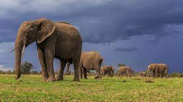
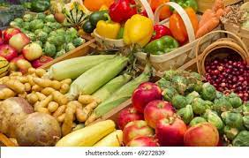

Chozas turistica
Chozo (o pequeña choza) es un refugio de ramaje o piedra que se construía
tanto a la intemperie en zonas montañosas como en los sotos, baldíos o dehesas de los campos,
y que era utilizado por pastores y agricultores para pernoctar junto al rebaño o protegerse de las inclemencias del tiempo, durante las labores ...
Leer más
Elefante Asiatico

El elefante asiático se puede encontrar en estado salvaje,
pero hay mucha presencia del elefante como animal doméstico en India,
Birmania y Sudeste asiático. Los asiáticos domesticaron a los elefantes 5000 años A.C., eso explica la centralidad cultural del elefante en la India
Leer más
Cosecha

La cosecha es un proceso agrícola que consiste en recoger los productos vegetales comestibles, que pueden ser frutos,
semillas u hortalizas de los campos, en la época del año en que están maduros.
La cosecha marca el final del crecimiento de una estación o el final del ciclo de un fruto en particular.
Leer más